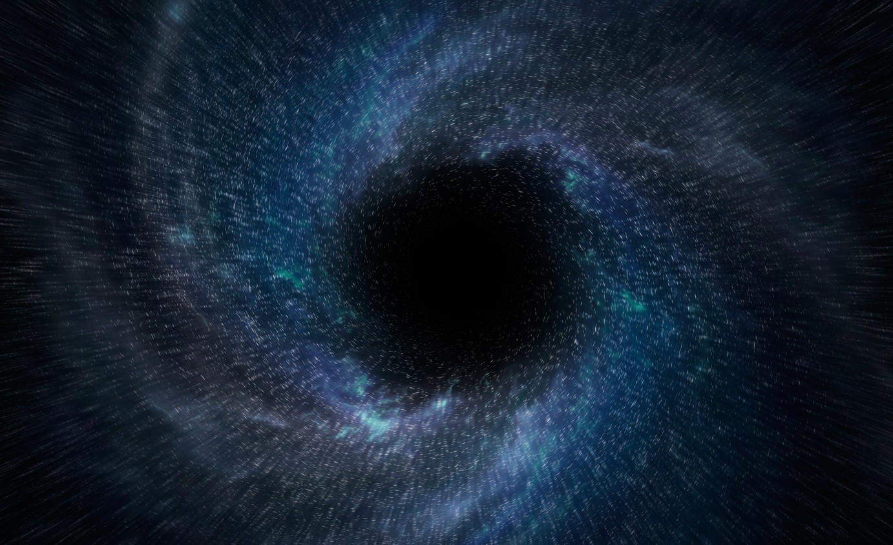
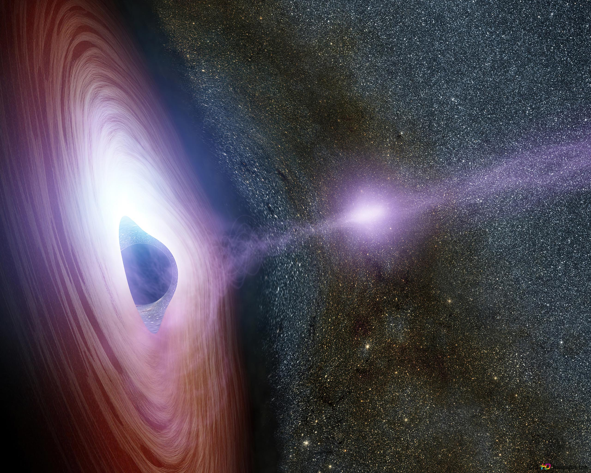
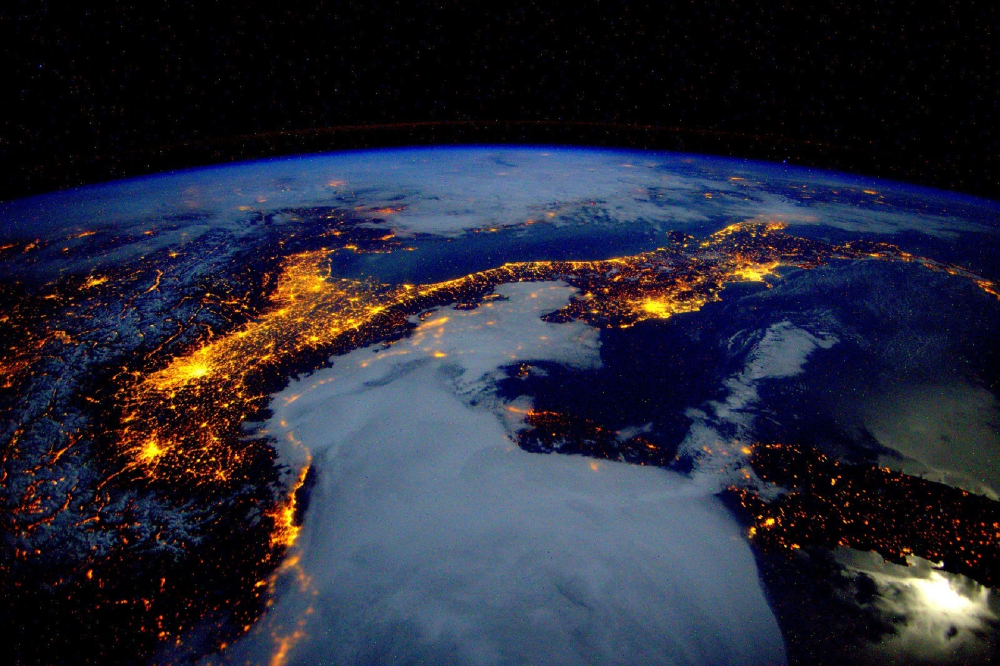
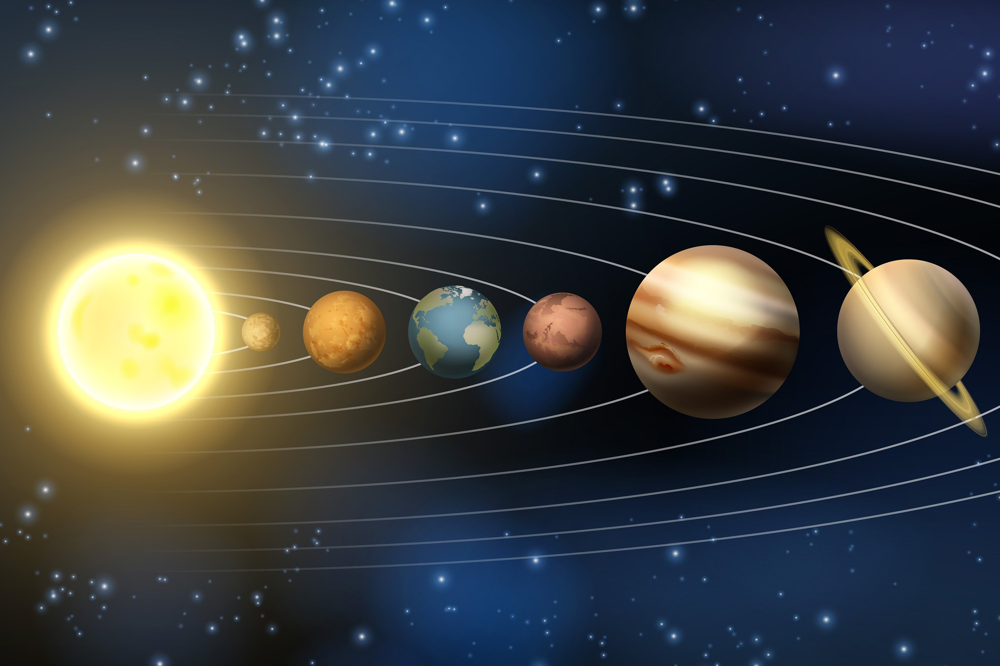

Черные дыры
Черная дыра - это область пространства-времени, где гравитация настолько сильна, что ничто, даже обладая огромной энергией, не может ее покинуть. Ученые считают, что внутри горизонта событий гравитация превосходит все другие силы природы. Черные дыры возникают, когда огромное количество материи сжимается в очень малом пространстве.
Звезда светит и греет до тех пор, пока в её недрах происходят термоядерные реакции. Сила гравитации стремится сжать звезду, а выделение энергии в термоядерных реакциях приводит к давлению потока частиц, направленному изнутри звезды к её поверхности – оно противодействует сжатию. Так звезда в течение миллионов (для самых горячих звезд) и миллиардов (для средних и относительно холодных звезд) лет остается в стабильном состоянии.Но вот топливо в недрах заканчивается, и звезда начинает перерабатывать водород, содержащийся во внешних слоях. Это приводит к её «раздуванию» до размеров красного гиганта. Наконец, звезда перерабатывает весь водород, термоядерные реакции прекращаются – и с этого момента больше ничто не препятствует сжатию ядра звезды. Процесс происходит стремительно, в доли секунды: ядро сокращается до шара диаметром всего в 10-30 км благодаря процессу нейтронизации (подробнее я описываю его в статье о нейтронных звездах), взрывается сверхновой и, если это звезда средней массы, остается быстро вращающаяся нейтронная звезда, или пульсар – объект чудовищной плотности, который быстрое вращение и возникающая при этом колоссальная центробежная сила удерживает от дальнейшего коллапса.
Земля
Земля - это ограниченная территория с наличием или отсутствием почвы, рельефа, растительности, гидрогеологии. Таким образом, земля - это обширное понятие, которое объединяет в себе помимо характеристик слоя земли, ещё и её принадлежность как территории землевладения. Почва же является дополнительной характеристикой земли, однако, исполняющей крайне важные для земледелия функции.
Солнечная система
Со́лнечная систе́ма — планетная система, включающая в себя центральную звезду Солнце и все естественные космические объекты на гелиоцентрических орбитах. Она сформировалась путём гравитационного сжатия газопылевого облака примерно 4,57 млрд лет назад[2]. Общая масса Солнечной системы составляет около 1,0014 M☉. Бо́льшая часть её приходится на Солнце; оставшаяся часть практически полностью содержится в восьми отдалённых друг от друга планетах, имеющих близкие к круговым орбиты, лежащие почти в одной плоскости — плоскости эклиптики. Из-за этого наблюдается противоречащее ожидаемому распределение момента импульса между Солнцем и планетами (так называемая «проблема моментов»): всего 2 % общего момента системы приходится на долю Солнца, масса которого в ~740 раз больше общей массы планет, а остальные 98 % — на ~0,001 общей массы Солнечной системы[18]. Четыре ближайшие к Солнцу планеты, называемые планетами земной группы, — Меркурий, Венера, Земля[19] и Марс — состоят в основном из силикатов и металлов. Четыре более удалённые от Солнца планеты, называемые планетами-гигантами, — Юпитер, Сатурн, Уран и Нептун — намного более массивны, чем планеты земной группы. Крупнейшие планеты-гиганты, входящие в состав Солнечной системы, — Юпитер и Сатурн — состоят главным образом из водорода и гелия и поэтому относятся к газовым гигантам; меньшие планеты-гиганты — Уран и Нептун — помимо водорода и гелия, преимущественно содержат воду, метан и аммиак, такие планеты выделяются в отдельный класс «ледяных гигантов»[20]. Шесть планет из восьми и четыре карликовые планеты имеют естественные спутники. Юпитер, Сатурн, Уран и Нептун окружены кольцами пыли и других частиц. В Солнечной системе существуют две области, заполненные малыми телами. Пояс астероидов, находящийся между Марсом и Юпитером, схож по составу с планетами земной группы, поскольку состоит из силикатов и металлов. Крупнейшими объектами пояса астероидов являются карликовая планета Церера и астероиды Паллада, Веста и Гигея. За орбитой Нептуна располагаются транснептуновые объекты, состоящие из замёрзшей воды, аммиака и метана, крупнейшими из которых являются Плутон, Хаумеа, Макемаке, Квавар, Орк, Эрида и Седна. В Солнечной системе существуют и другие популяции малых тел, такие как планетные квазиспутники и троянцы, околоземные астероиды, кентавры, дамоклоиды, а также перемещающиеся по системе кометы, метеороиды и космическая пыль. Солнечный ветер (поток плазмы от Солнца) создаёт пузырь в межзвёздной среде, называемый гелиосферой, который простирается до края рассеянного диска. Гипотетическое облако Оорта, служащее источником долгопериодических комет, может простираться на расстояние примерно в тысячу раз дальше гелиосферы. Солнечная система входит в состав структуры галактики Млечный Путь.
Факты о космосе
- 1. На Луне время идёт быстрее, чем на Земле.
- 2. Космонавтам удаётся встретить 16 рассветов за 24 часа полёта.
- 3. В созвездии Рака можно заметить алмазную планету, на которой год длится 18 дней.
- 4. Во время пребывания в космосе, как правило, все клетки омолаживаются.
- 5. На орбите Земли невозможно превратиться в кусок льда, поскольку температура вокруг орбиты составляет +4 °С.
- 6. В космосе можно встретить малиновый фреш.
- 7. Следы космонавтов на поверхности Луны могут оставаться в течение миллионов лет.
- 8. Если бы внутри Солнца была пустота, то в него можно было бы поместить 1,3 миллиона одинаковых планет Земля.
- 9. Без скафандра человек в космосе может увеличиться в несколько раз.
- 10. Если человек окажется вблизи Чёрной дыры и упадёт в неё, то он сузится в ширину и вытянется в длину.
Обратная связь
Наша электронная почта: gmail3432@gmail.com
Наши контакты: +79999999999
Форма обратной связи
Разработчик: Усов Денис